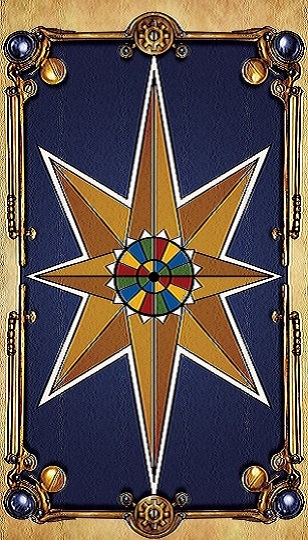

	<div>
		<!--
		<div class="menupic"  style="">
			
		</div>
-->
		<div after-view class="menupic  menupic-topright"  style="" ng-init="menutopshow=false">
			
			
		</div>
		
		<div after-view class="menupic menupic-botleft"  style="top:50vh;text-align:right" ng-init="menuleftshow=false">
			
			
		</div>
		
		<div class="menupic"  style="top:50vh;left:50vw;z-index:-1">
			
		</div>

		<div after-view class="drawmenu drawmenu-top panel panel-default"  ng-class="{'menupop-top': menutopshow}">
			
			<div class="panel-body">
			<h4>塔羅</h4>
			姓名: <input ng-model="askerName"><br>
			張數:
			<select ng-model="cardNum" ng-init="cardNum=cardTypes[1].number[2]" ng-options="num for num in cardTypes[1].number"></select><br>
			<a class="btn btn-default" href="#/result/{{askerName}}/{{cardNum}}">抽牌</a>
			</div>
		</div>

		<div after-view class="drawmenu drawmenu-left panel"  ng-class="{'menupop-left': menuleftshow}">
			<div class="panel-body">
			<h4>天使(建構中)</h4>
			姓名: <input ng-model="askerName"><br>

			類型:
			<select ng-model="cardType" ng-init="cardType=cardTypes[0]" ng-options="type.name for type in cardTypes"></select><br>

			張數:
			<select ng-model="cardNum" ng-init="" ng-options="num for num in cardTypes[0].number"></select><br>
			<a href="#/result/{{askerName}}/{{cardNum}}" class="btn btn-default">抽牌</a>
		</div>
		</div>


	</div>